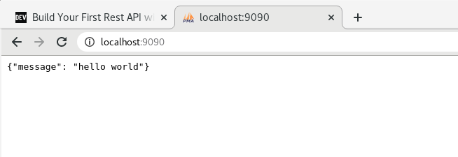

KUBERNETES
-
K8SEs una herramienta extensible y de código abierto para gestionar cargas de trabajo y servicios en contenedores, que facilita tanto la configuración declarativa como la automatización. Tiene un ecosistema grande y de rápido crecimiento. Los servicios, el soporte y las herramientas están ampliamente disponibles. -
Funciones:
- Service discovery: mira cuantos nodos hay, los escanea para saber de ellos.
- Rollouts/Rollbacks: para desplegar versiones nuevas o volver a la misma.
- Optimización de recursos en nodos: mira donde colocar el contenedor al host con menos carga.
- Self-healing: crea automaticamente un contenedor cuando uno muere.
- Configuración de secretos
- Escalamiento horizontal
ARQUITECTURA

-
MASTER/NODE: Kubernetes se divide en master, es el cerebro, es la parte que se encarga de todo el procesamiento, es donde estan todas las herramientas, es el centro de operaciones. Los nodos son las máquinas, host, máquinas virutal.
El master es como la aduana y los nodes son los barcos que se llevan los contenedores de la duana. -
API SERVER: Aplication Program Interface, significa que yo me puedo comunicar con un servicio a través de la API. Puedo hacerlo con la herramienta kubectl o directamente por fichero de programación. Ambos son en JSON, por lo que acaba procesando todo en código JSON.
-
KUBE-SCHEDULE: es el que se encarga de colocar las cosas donde deben ir. Cuando comunico algo a la API, este le pasa las especificaciones al Schedule y éste busca a ver que nodo va mejor para poner todo, si hay muchos, mirar los 15 primeros aprox y lo pone donde mejor vea. Si no encuentra sitio, se espera hasta que quede uno libre correctamente para poder meter el contenedor.
-
KUBE-CONTROLLER: dentro tiene el node controler (se encarga de ver nodos, si se cae uno, levanta otra máquina), el replication(encargado de mantener todas las réplicas especificadas), el end point controller(se encarga de la red y pods) y tenemos el service account y tokens controller(para la autenticación).
-
ETCD: es la base de datos de kubernetes donde están todas las configuraciones, cambios, estados nuevos, anteriores, etc. Si ponemos algo en una versión nueva y queremos volver atrás, en el etcd está guardado el estado y configuración anterior.
-
KUBELET: se encuentra en cada nodo y tienen dos funciones, en enviar y recibir información al master y por otro lado, habla con el run controller(normalmente docker),que tiene que estar instalado en cada nodo, para decirle las especificaciones que debe desplegar/montar en el POD del nodo.
-
KUBE-PROXY: se encuentra en cada nodo y se encarga de todo lo relacionado con la red del nodo y que se puedan comunicar entre contenedores/pods.
-
CONTAINER-RUNTIME: el software de contenedores que tiene instalado el nodo: docker,etc.
INSTALACIÓN MINIKUBE/KUBECTL
-
MINIKUBE: crea o simula un cluster pequeño que nos permite hacerlo en local.
-
Ejecutamos esta orden y sino sale vacío , vamos bien:
grep -E --color 'vmx|svm' /proc/cpuinfo -
Instalamos
kubectl, la intermediario para hablar con kubernetes:-
curl -LO "https://storage.googleapis.com/kubernetes-release/release/$(curl -s https://storage.googleapis.com/kubernetes-release/release/stable.txt)/bin/linux/amd64/kubectl" -
chmod +x ./kubectl -
sudo mv ./kubectl /usr/bin/kubectl -
kubectl version --client
-
-
Para usar minikube se necesita un
Hypervisor(o monitor de máquina virtual (virtual machine monitor)1​ es una plataforma que permite aplicar diversas técnicas de control de virtualización para utilizar, al mismo tiempo, diferentes sistemas operativos en una misma computadora):- KVM
- VirtualBox
- Docker
-
Descargamos
minikube:-
curl -Lo minikube https://storage.googleapis.com/minikube/releases/latest/minikube-linux-amd64 && chmod +x minikube -
sudo mv minikube /usr/bin/ -
minikube status
[isx46410800@miguel curso_kubernetes]$ minikube status ü§∑ There is no local cluster named "minikube" üëâ To fix this, run: "minikube start" [isx46410800@miguel curso_kubernetes]$ minikube start üòÑ minikube v1.13.1 on Fedora 27 ✨ Automatically selected the docker driver üëç Starting control plane node minikube in cluster minikube üöú Pulling base image ... üíæ Downloading Kubernetes v1.19.2 preload ... > preloaded-images-k8s-v6-v1.19.2-docker-overlay2-amd64.tar.lz4: 486.36 MiB üî• Creating docker container (CPUs=2, Memory=2200MB) ... üßØ Docker is nearly out of disk space, which may cause deployments to fail! (93% of capacity) üí° Suggestion: Try at least one of the following to free up space on the device: 1. Run "docker system prune" to remove unused docker data 2. Increase the amount of memory allocated to Docker for Desktop via Docker icon > Preferences > Resources > Disk Image Size 3. Run "minikube ssh -- docker system prune" if using the docker container runtime üçø Related issue: https://github.com/kubernetes/minikube/issues/9024 üê≥ Preparing Kubernetes v1.19.2 on Docker 19.03.8 ... üîé Verifying Kubernetes components... üåü Enabled addons: default-storageclass, storage-provisioner üèÑ Done! kubectl is now configured to use "minikube" by default -
-
Comprobamos de nuevo que sí funciona
minikube status:
[isx46410800@miguel curso_kubernetes]$ minikube status
minikube
type: Control Plane
host: Running
kubelet: Running
apiserver: Running
kubeconfig: Configured
-
COMANDOS BÁSICOS MINIKUBE:
minikube statusminikube stop/start/delete
-
Repositorio curso Kubernetes
PODS VS CONTENEDORES

-
Los contenedores se ejecutan de manera aislada en un namespace:
- IPC (Inter Process Communication)
- Cgroup
- Network
- Mount
- PID
- User
- UTS (Unix Timesharing System)
-
Los PODS sirven para compartir namespaces entre contenedores. Con docker permite que varios contenedores se puedan comunicar entre ellos por procesos, redes, files,etc. Kubernetes levanta un servicio y hace que el resto de contenedores compartan ese ID por ejemplo de red y se puedan comunicar y compartir namespaces como:
- De red(verse en la misma red)
- IPC(verse los procesos)
- UTS
Cuando hablamos de PODs entonces nos referimos a que solo tiene una unica IP para todo lo que haya dentro comunicado. Solo es una capa que agrupa estos contenedores.
PODS
CREAR POD
-
Primero tenemos que tener encendido el simulador:
minikube start -
Documentación:
versión v1.19 la última -
Creamos un pod de prueba
kubectl run nombrePod --image:xxx:tag:
[isx46410800@miguel curso_kubernetes]$ kubectl run pod-test --image=nginx:alpine
pod/pod-test created
- Vemos que lo hemos creado y está corriendo:
[isx46410800@miguel curso_kubernetes]$ kubectl get pods
NAME READY STATUS RESTARTS AGE
pod-test 1/1 Running 0 22s
Normalmente hay un contenedor por pod, se suele asimilar a eso.
LOGS PODS
-
Un pod es la unidad más pequeña para poder trabajar en Kubernetes. Se le notifica a la API que hable con Schedule y Controller y busquen un nodo donde crear ese pod con ciertas especifiaciones. Lo que corre dentro es el contenedor, el POD no corre.
-
Creamos uno pod mal aposta para ver el error:
[isx46410800@miguel curso_kubernetes]$ kubectl run pod-test2 --image=nginx:miguelllll
pod/pod-test2 created
[isx46410800@miguel curso_kubernetes]$ kubectl get pods
NAME READY STATUS RESTARTS AGE
pod-test 1/1 Running 0 5m19s
pod-test2 0/1 ErrImagePull 0 14s
- Para ver los ´logs´ usamos
kubectl describe pod nombrePod:
kubectl describe pod pod-testEn el apartado
eventsnos describe los logs paso a paso.
API-RESOURCES
- Para ver todos los recursos que hay y los shortnames de comandos se usa:
kubectl api-resources
ELIMINAR PODS
-
Para eliminar pods usamos
kubectl delete pod podName ...:
kubectl delete pod pod-test2 -
Todos:
kubectl delete pod --all
OBTENER YAML POD
-
Podemos obtener info solo del pod concreto:
kubectl get pod pod-test -
Para más info para obtener el contenido YAML, lo que comunica al API de kubernetes en los request:
kubectl get pod pod-test -o yaml -
Es mejor enviar las cosas por manifiestos en YAML ya que si quieres crear 50 pods, a través de un fichero será mejor que no ir poniendo una orden 50 veces.
IP POD
- Para poder ver la IP del POD podemos usar cualquiera de estos comandos:
kubectl describe pod pod-test
kubectl get pod pod-test -o yaml
En este caso es 172.18.0.3
-
Para verlo ingresamos directamente al navegador la ip.
-
Si no funciona tenemos que mapear el puerto:
kubectl port-forward pod-test 7000:80

- Comprobamos la respuesta:
curl 172.18.0.3:80
ENTRAR AL POD
-
Para ingresar a la consola del POD:
kubectl exec -it pod-test -- shCuando solo hay un contenedor, no se especifica el nombre del pod.
-
Cuando hay más contenedores
c, --container='':
kubectl exec -it pod-test -c containerName -- sh
CREAR POD YAML
- Ejemplo:
apiVersion: v1
kind: Pod
metadata:
name: pod-test2
spec:
containers:
- name: container1
image: nginx:alpine
-
Las api versions las podemos ver en:
kubectl api-versions -
Los kind los podemos ver en:
kubectl api-resources -
Para crearlo a través del fichero YAML:
kubectl apply -f pod.yaml
[isx46410800@miguel pods]$ kubectl apply -f pod.yaml
pod/pod-test2 created
[isx46410800@miguel pods]$ kubectl get pods
NAME READY STATUS RESTARTS AGE
pod-test 1/1 Running 0 6h54m
pod-test2 1/1 Running 0 7s
-
Para borrarlo:
kubectl delete -f pod.yaml -
Para crear dos o más PODS, se pone
---de separación:
apiVersion: v1
kind: Pod
metadata:
name: pod-test2
spec:
containers:
- name: container1
image: nginx:alpine
---
apiVersion: v1
kind: Pod
metadata:
name: pod-test3
spec:
containers:
- name: container2
image: nginx:alpine
2+ CONTAINER POR POD
- Para crear dos o más containers en un POD se añade en la subsección containers:
apiVersion: v1
kind: Pod
metadata:
name: pod-test2
spec:
containers:
- name: container1
image: python:3.6-alpine
command: ['sh', '-c', 'echo "cont1" > index.html && python -m http.server 8082']
- name: container2
image: python:3.6-alpine
command: ['sh', '-c', 'echo "cont2" > index.html && python -m http.server 8082']
Nos dará error porque estamos levantando dos container en el mismo puerto. El problema es que en un POD todos los containers comparten la misma red , por lo que si se levanta uno en el puerto 8082, el otro tiene que ser diferente.
- Vemos los
logsenkubectl logs podName -c container:
263dab[isx46410800@miguel pods]$ kubectl logs pod-test2 -c container2
Traceback (most recent call last):
...
File "/usr/local/lib/python3.6/socketserver.py", line 470, in server_bind
self.socket.bind(self.server_address)
OSError: [Errno 98] Address in use
- Arreglamos el fallo del puerto y comprobamos cada container del POD:
[isx46410800@miguel pods]$ kubectl exec -it pod-test2 -c container1 -- sh
/ # cat index.html
cont1
/ # exit
[isx46410800@miguel pods]$ kubectl exec -it pod-test2 -c container2 -- sh
/ # cat index.html
cont2
LABELS
- Los labels son etiquetas que se ponen debajo de los
metadata:
apiVersion: v1
kind: Pod
metadata:
name: pod-test2
labels:
app: front-end
env: dev
spec:
containers:
- name: container1
image: nginx:alpine
---
apiVersion: v1
kind: Pod
metadata:
name: pod-test3
labels:
app: back-end
env: dev
spec:
containers:
- name: container1
image: nginx:alpine
- Los labels nos sirve para poder filtrar PODs con
kubectl get pods -l nombre=valor:
[isx46410800@miguel pods]$ kubectl get pods -l app=back-end
NAME READY STATUS RESTARTS AGE
pod-test3 1/1 Running 0 62s
[isx46410800@miguel pods]$ kubectl get pods -l env=dev
NAME READY STATUS RESTARTS AGE
pod-test2 1/1 Running 0 78s
pod-test3 1/1 Running 0 78s
Los LABELS más usado es el de APP. Muy importantes para administrar replicas.
PROBLEMAS PODs
-
Los PODS no se regeneran solos si lo eliminamos manualmente, aunque se diga que haya dos replicas siempre. Tiene que ser un objeto mayor quien lo haga.
-
Los PODs por si solo en un archivo YAML no puede indicarse que haya 50 replicas por ejemplo. Tiene que ser un objeto mayor quien lo haga.
-
Los PODs no se pueden actualizar directamente, tiene que hacerlo alguien externo. Como mucho solo se puede modificar la seccion
imagey al hacer el apply puede ser que te deje actualizar.
REPLICASETS
-
Es un objeto separado del POD a un nivel más alto(el replicaset crea PODs y es su dueño).
-
Si se le indica que haya dos, si se muere uno y solo queda un POD, levanta uno nuevo. Para ello es muy importante los LABELS para ver que PODs tiene que manejar.
-
En la metadata del POD mete el
OWNER REFERENCEpara indicar quien el propietario de los PODs y los suyos no los maneje otro ReplicaSet.
CREAR REPLICASET
-
Vemos a donde pertenece la api-version y el kind de los replicasets en:
kubectl api-resources -
Ejemplo:
apiVersion: apps/v1
kind: ReplicaSet
metadata:
name: rs-test
labels:
app: rs-test
spec:
# modify replicas according to your case
replicas: 5
selector:
matchLabels:
app: pod-label
# pertenece a los PODs que vas a crear
template:
metadata:
labels:
app: pod-label
spec:
containers:
- name: container1
image: python:3.6-alpine
command: ['sh', '-c', 'echo "cont1" > index.html && python -m http.server 8082']
- name: container2
image: python:3.6-alpine
command: ['sh', '-c', 'echo "cont2" > index.html && python -m http.server 8083']
-
Lo creamos:
kubectl apply -f replica-set.yamlLo que creamos son 5 PODs con label(pod-label, sino está lo crea) y dentro de cada POD creamos dos containers con label(pod-label)
-
Comprobamos:
[isx46410800@miguel replicaset]$ kubectl get pods
NAME READY STATUS RESTARTS AGE
rs-test-5tsfh 2/2 Running 0 105s
rs-test-9jpjg 2/2 Running 0 105s
rs-test-fbwjb 2/2 Running 0 105s
rs-test-hz2kx 2/2 Running 0 105s
rs-test-s6cxx 2/2 Running 0 105s
[isx46410800@miguel replicaset]$ kubectl get pods -l app=pod-label
NAME READY STATUS RESTARTS AGE
rs-test-5tsfh 2/2 Running 0 119s
rs-test-9jpjg 2/2 Running 0 119s
rs-test-fbwjb 2/2 Running 0 119s
rs-test-hz2kx 2/2 Running 0 119s
rs-test-s6cxx 2/2 Running 0 119s
- Ver los
replicasetsconkubectl get rs:
[isx46410800@miguel replicaset]$ kubectl get rs
NAME DESIRED CURRENT READY AGE
rs-test 5 5 5 3m53s
[isx46410800@miguel replicaset]$ kubectl get replicaset
NAME DESIRED CURRENT READY AGE
rs-test 5 5 5 3m56s
ELIMINAR/MODIFICAR
- En un replicaset creado, si borramos un pod, vemos como actualiza directamente para mantener los 5 pods indicados:
[isx46410800@miguel replicaset]$ kubectl delete pod rs-test-s6cxx
pod "rs-test-s6cxx" deleted
[isx46410800@miguel replicaset]$ kubectl get pods
NAME READY STATUS RESTARTS AGE
rs-test-5tsfh 2/2 Running 0 5m43s
rs-test-9jpjg 2/2 Running 0 5m43s
rs-test-b9lf4 2/2 Running 0 43s
rs-test-fbwjb 2/2 Running 0 5m43s
rs-test-hz2kx 2/2 Running 0 5m43s
- Si modifico el replicaset a 2 copias, veremos como se eliminan 3, se quedan dos:
[isx46410800@miguel replicaset]$ vim replica-set.yaml
[isx46410800@miguel replicaset]$ kubectl apply -f replica-set.yaml
replicaset.apps/rs-test configured
[isx46410800@miguel replicaset]$ kubectl get pods
NAME READY STATUS RESTARTS AGE
rs-test-5tsfh 2/2 Running 0 8m29s
rs-test-9jpjg 2/2 Terminating 0 8m29s
rs-test-b9lf4 2/2 Terminating 0 3m29s
rs-test-fbwjb 2/2 Running 0 8m29s
rs-test-hz2kx 2/2 Terminating 0 8m29s
[isx46410800@miguel replicaset]$ kubectl get pods
NAME READY STATUS RESTARTS AGE
rs-test-5tsfh 2/2 Running 0 9m26s
rs-test-fbwjb 2/2 Running 0 9m26s
LOGS
-
Por describe:
kubectl get rs rs-test -o yaml -
Por manifiesto YAML:
kubectl describe rs rs-test
OWNER REFERNCE
- Lo vemos en la metadata de un pod creado por ReplicaSet
kubectl get pod podName -o yaml:
kubectl get pod rs-test-5tsfh -o yaml
name: rs-test-5tsfh
namespace: default
ownerReferences:
- apiVersion: apps/v1
blockOwnerDeletion: true
controller: true
kind: ReplicaSet
name: rs-test
uid: 646a4a62-6acc-41a7-b3d1-7fe095c441d0
- Comprobamos que el
UIDanterior coincide con el replicaset creadokubectl get rs rsName -o yaml:
kubectl get rs rs-test -o yaml
name: rs-test
namespace: default
resourceVersion: "22732"
selfLink: /apis/apps/v1/namespaces/default/replicasets/rs-test
uid: 646a4a62-6acc-41a7-b3d1-7fe095c441d0
ADOPCIÓN DE PODS PLANOS
- Vamos a crear primero dos PODs manualmente:
[isx46410800@miguel replicaset]$ kubectl run pod-test --image=nginx:alpine
pod/pod-test created
[isx46410800@miguel replicaset]$ kubectl run pod-test2 --image=nginx:alpine
pod/pod-test2 created
- Les creamos un LABEL a cada uno con
kubectl label pods podName label=valor:
[isx46410800@miguel replicaset]$ kubectl label pods pod-test app=pod-label
pod/pod-test labeled
[isx46410800@miguel replicaset]$ kubectl label pods pod-test2 app=pod-label
pod/pod-test2 labeled
Tendran el nuevo label pero no tendrán ningun OWNER REFERENCE porque no han sido creados por ningun REPLICASET.
- Ahora mediante replicaset cremos 3 replicas con mismo label:
[isx46410800@miguel replicaset]$ kubectl apply -f replica-set.yaml
replicaset.apps/rs-test created
[isx46410800@miguel replicaset]$ kubectl get pods
NAME READY STATUS RESTARTS AGE
pod-test 1/1 Running 0 3m49s
pod-test2 1/1 Running 0 3m45s
rs-test-8mk72 2/2 Running 0 10s
Tenemos un GRAN PROBLEMA ya que adopta dos pods huerfanos sin owner y los coge pero los adopta y ellos solo tienen un container y no dos con la estructura del replicaset. Si borramos un pod de uno, el replicaset regenera uno nuevo con la estructura buena.
PROBLEMAS
-
Si modificamos cosas del container como la imagen, nombre container, etc. Si hacemos un apply no se actualiza nada, ya que como sigue con los mismos LABELS, el replicaset solo se guia por pods y labels y no de actualizar nada de lo que contiene.
-
NO se auto-actualizan solos.
-
Si modificamos por ejemplo la imagen de un container de un pod de python de 3.6 a 3.7, se actualiza el ReplicSet pero no los PODs. Si se borra un POD, entonces el nuevo POD si que tiene las nuevas actualizaciones.
DEPLOYMENTS
-
Es un objeto de nivel mayor que los replicaset. Es el dueño del replicaset que a su vez es de sus PODs.
-
Al deployment se le da una imagen o una nueva versión: genera un replicaset con sus pods. Si se actualiza algo, se crea un segundo replicaset con un primer POD, y luego va matando del primer POD el pod viejo de v1 y crea otro POD en el nuevo replicaset con V2, y así succesivamente.
-
Esto se logra porque los deployments tienen dos valores: Uno de máximo extra y otra de un máximo de inutilizado. Normalmente este valor por defecto es un 25%. Por lo que en el ejemplo anterior podemos hacer 1 pod más y solo dejar 1 pod inutilizado.
-
Los deployments pueden mantener un máximo de 10 replicasets
CREAR DEPLOYMENT
-
Vemos a donde pertenece la api-version y el kind de los deployments en:
kubectl api-resources -
Ejemplo:
# esto es del deployment
apiVersion: apps/v1
kind: Deployment
metadata:
name: deployment-test
labels:
app: front
# aqui viene el replicaset
spec:
replicas: 3
selector:
matchLabels:
app: front
# aqui viene el pod
template:
metadata:
labels:
app: front
spec:
containers:
- name: nginx
image: nginx:alpine
ports:
- containerPort: 80
- Lo creamos con
kubectl apply -f deployment.yaml:
[isx46410800@miguel deployments]$ kubectl apply -f deployment.yaml
deployment.apps/deployment-test created
- Vemos el deployment creado
kubectl get deployment:
[isx46410800@miguel deployments]$ kubectl get deployment
NAME READY UP-TO-DATE AVAILABLE AGE
deployment-test 3/3 3 3 8s
- Vemos los labels del deployment
kubectl get deployment --show-labels:
[isx46410800@miguel deployments]$ kubectl get deployment --show-labels
NAME READY UP-TO-DATE AVAILABLE AGE LABELS
deployment-test 3/3 3 3 21s app=front
- Vemos el estado del deployment
kubectl rollout status deployment deploymentName:
[isx46410800@miguel deployments]$ kubectl rollout status deployment deployment-test
deployment "deployment-test" successfully rolled out
- Vemos que se ha creado un replicaset y tiene los mismo labels:
[isx46410800@miguel deployments]$ kubectl get replicaset
NAME DESIRED CURRENT READY AGE
deployment-test-659b64d66c 3 3 3 4m28s
[isx46410800@miguel deployments]$ kubectl get replicaset --show-labels
NAME DESIRED CURRENT READY AGE LABELS
deployment-test-659b64d66c 3 3 3 5m8s app=front,pod-template-hash=659b64d66c
- Vemos que se ha creado 3 replicas del pod y tiene los mismo labels:
[isx46410800@miguel deployments]$ kubectl get pods
NAME READY STATUS RESTARTS AGE
deployment-test-659b64d66c-n5qgr 1/1 Running 0 4m32s
deployment-test-659b64d66c-pzdct 1/1 Running 0 4m32s
deployment-test-659b64d66c-thknz 1/1 Running 0 4m32s
[isx46410800@miguel deployments]$ kubectl get pods --show-labels
NAME READY STATUS RESTARTS AGE LABELS
deployment-test-659b64d66c-n5qgr 1/1 Running 0 5m14s app=front,pod-template-hash=659b64d66c
deployment-test-659b64d66c-pzdct 1/1 Running 0 5m14s app=front,pod-template-hash=659b64d66c
deployment-test-659b64d66c-thknz 1/1 Running 0 5m14s app=front,pod-template-hash=659b64d66c
- Vemos la jerarquía de lo creado para saber quien es el
owner referencede cada cosa conkubectl get rs/pod/deployment NAME -o yaml: - Deployment no tiene dueño
- Replicaset su dueño es deployment
- Pod su dueño es replicaset
ROLLING UPDATE
- Actualizamos por ejemplo la imagen de un container del POD en vez de
nginx:alpineponemosnginxy hacemos de nuevo elkubectl apply -f deployment.yaml:
[isx46410800@miguel deployments]$ kubectl apply -f deployment.yaml
deployment.apps/deployment-test configured
[isx46410800@miguel deployments]$ kubectl get pods
NAME READY STATUS RESTARTS AGE
deployment-test-659b64d66c-n5qgr 1/1 Running 0 13m
deployment-test-659b64d66c-pzdct 1/1 Running 0 13m
deployment-test-659b64d66c-thknz 1/1 Running 0 13m
deployment-test-69b674677d-2cq4l 0/1 ContainerCreating 0 5s
[isx46410800@miguel deployments]$ kubectl get deployment
NAME READY UP-TO-DATE AVAILABLE AGE
deployment-test 3/3 1 3 14m
[isx46410800@miguel deployments]$ kubectl get replicaset
NAME DESIRED CURRENT READY AGE
deployment-test-659b64d66c 3 3 3 14m
deployment-test-69b674677d 1 1 0 18s
[isx46410800@miguel deployments]$ kubectl get pods
NAME READY STATUS RESTARTS AGE
deployment-test-659b64d66c-n5qgr 0/1 Terminating 0 14m
deployment-test-659b64d66c-pzdct 1/1 Running 0 14m
deployment-test-659b64d66c-thknz 1/1 Terminating 0 14m
deployment-test-69b674677d-2cq4l 1/1 Running 0 25s
deployment-test-69b674677d-dwdlr 0/1 ContainerCreating 0 1s
deployment-test-69b674677d-dwspw 1/1 Running 0 6s
[isx46410800@miguel deployments]$ kubectl get pods
NAME READY STATUS RESTARTS AGE
deployment-test-69b674677d-2cq4l 1/1 Running 0 43s
deployment-test-69b674677d-dwdlr 1/1 Running 0 19s
deployment-test-69b674677d-dwspw 1/1 Running 0 24s
- Vemos el estado en directo de lo que hace con
ubectl rollout status deployment deploymentName:
[isx46410800@miguel deployments]$ kubectl rollout status deployment deployment-test
Waiting for deployment "deployment-test" rollout to finish: 1 out of 3 new replicas have been updated...
Waiting for deployment "deployment-test" rollout to finish: 1 out of 3 new replicas have been updated...
Waiting for deployment "deployment-test" rollout to finish: 1 out of 3 new replicas have been updated...
Waiting for deployment "deployment-test" rollout to finish: 2 out of 3 new replicas have been updated...
Waiting for deployment "deployment-test" rollout to finish: 2 out of 3 new replicas have been updated...
Waiting for deployment "deployment-test" rollout to finish: 2 out of 3 new replicas have been updated...
Waiting for deployment "deployment-test" rollout to finish: 1 old replicas are pending termination...
Waiting for deployment "deployment-test" rollout to finish: 1 old replicas are pending termination...
deployment "deployment-test" successfully rolled out
- También podemos ver el resultado en
kubectl describe deployment deploymentName:
Events:
Type Reason Age From Message
---- ------ ---- ---- -------
Normal ScalingReplicaSet 19m deployment-controller Scaled up replica set deployment-test-659b64d66c to 3
Normal ScalingReplicaSet 5m18s deployment-controller Scaled up replica set deployment-test-69b674677d to 1
Normal ScalingReplicaSet 4m59s deployment-controller Scaled down replica set deploy
- Aquí vemos también la estrategía de los valores que comentamos en la introducción:
RollingUpdateStrategy: 25% max unavailable, 25% max surge
HISTORIAL DE DEPLOYMENTS
- Podemos ver las actualizaciones o revisiones en el historial de deployments en
kubectl rollout history deployment deployment:
[isx46410800@miguel deployments]$ kubectl rollout history deployment deployment-test
deployment.apps/deployment-test
REVISION CHANGE-CAUSE
2 <none>
3 <none>
4 <none>
- Podemos con esto volver a cualquier versión anterior. Por defecto es 10 replicasets que guarda pero podemos cambiarlo añadiento en la parte de replicaset del manifiesto YAML
revisionHistoryLimit: 5:
# esto es del deployment
apiVersion: apps/v1
kind: Deployment
metadata:
name: deployment-test
labels:
app: front
# aqui viene el replicaset
spec:
revisionHistoryLimit: 5
replicas: 3
selector:
matchLabels:
app: front
# aqui viene el pod
template:
metadata:
labels:
app: front
spec:
containers:
- name: nginx
image: nginx:alpine
ports:
- containerPort: 80
-
Para poner un motivo en el
change-causecuando hacemos una versión de deployments indicamos dos maneras: -
Con la linea de desplegar
kubectl apply -f deployment.yaml --record:
[isx46410800@miguel deployments]$ kubectl apply -f deployment.yaml --record deployment.apps/deployment-test configured [isx46410800@miguel deployments]$ kubectl rollout history deployment deployment-test deployment.apps/deployment-test REVISION CHANGE-CAUSE 1 <none> 2 <none> 3 kubectl apply --filename=deployment.yaml --record=true -
Con una subsección en el manifiesto deployment.yaml
annotations-> kubernetes.io/change-cause: "message":
esto es del deployment apiVersion: apps/v1 kind: Deployment metadata: name: deployment-test annotations: kubernetes.io/change-cause: "changes port to 110" labels: app: front
kubectl rollout history deployment deployment-test deployment.apps/deployment-test REVISION CHANGE-CAUSE 1 <none> 2 <none> 3 kubectl apply --filename=deployment.yaml --record=true 4 changes port to 110 -
Para luego ver una revisión en concreta usamos
kubectl rollout history deployment deployment-test --revision=3:
deployment.apps/deployment-test with revision #3
Pod Template:
Labels: app=front
pod-template-hash=fd8445c88
Annotations: kubernetes.io/change-cause: kubectl apply --filename=deployment.yaml --record=true
Containers:
nginx:
Image: nginx:alpine
Port: 90/TCP
Host Port: 0/TCP
Environment: <none>
Mounts: <none>
Volumes: <none>
ROLL BACKS
- Se utiliza para volver a un estado bien porque por ejemplo ha ido mal una actualización de la imagen:
containers:
- name: nginx
image: nginx:fake
ports:
- containerPort: 110
- Vemos el nuevo historial y su fallo:
[isx46410800@miguel deployments]$ kubectl rollout history deployment deployment-test
deployment.apps/deployment-test
REVISION CHANGE-CAUSE
1 <none>
2 <none>
3 kubectl apply --filename=deployment.yaml --record=true
4 changes port to 110
5 new version nginx
#
[isx46410800@miguel deployments]$ kubectl get pods
NAME READY STATUS RESTARTS AGE
deployment-test-5c6896bcd5-h5qts 0/1 ErrImagePull 0 32s
deployment-test-74fb9c6d9f-7dwnr 1/1 Running 0 6m50s
deployment-test-74fb9c6d9f-f5qs8 1/1 Running 0 6m45s
deployment-test-74fb9c6d9f-lsmzj 1/1 Running 0 6m54s
- Volvemos haciendo un
rollbacka una versión anterior conkubectl rollout undo deployment deployment-test --to-revision=4:
[isx46410800@miguel deployments]$ kubectl rollout undo deployment deployment-test --to-revision=4
deployment.apps/deployment-test rolled back
#
[isx46410800@miguel deployments]$ kubectl rollout status deployment deployment-test
deployment "deployment-test" successfully rolled out
#
[isx46410800@miguel deployments]$ kubectl describe deployment deployment-test
Name: deployment-test
Namespace: default
CreationTimestamp: Sun, 11 Oct 2020 19:21:04 +0200
Labels: app=front
Annotations: deployment.kubernetes.io/revision: 6
kubernetes.io/change-cause: changes port to 110
Selector: app=front
Replicas: 3 desired | 3 updated | 3 total | 3 available | 0 unavailable
StrategyType: RollingUpdate
MinReadySeconds: 0
RollingUpdateStrategy: 25% max unavailable, 25% max surge
Pod Template:
Labels: app=front
Containers:
nginx:
Image: nginx:alpine
Port: 110/TCP
Host Port: 0/TCP
#
[isx46410800@miguel deployments]$ kubectl describe deployment deployment-test
Normal ScalingReplicaSet 117s (x12 over 15m) deployment-controller (combined from similar events): Scaled down replica set deployment-test-5c6896bcd5 to 0
SERVICIOS
-
Los servicios es una cosa aparte en el que el usuario se comunica a su IP del servicio y éste observar todos los pods que tienen un label con ese servicio y actua como balanzador de carga para ver a donde llamar para que le de la data. Siempre va a tener la misma data con cualquier que se comunique.
-
Los PODs tienen una IP unica cada uno, que si se muere, se regenera con otra IP. El servicio también tiene su IP unica en el que kubernetes se encarga de que siempre tenga la misma con el tiempo.
-
Los
endpointsse crean automaticamente cuando se crea un servicio. Todas las IPs de los PODs se van guardando en el endpoint y así el servicio sabe a que IPs se puede comunicar para los PODs con su mismo label de servicio.
CREAR SERVICIO
-
Vemos a donde pertenece la api-version y el kind de los servicios en:
kubectl api-resources -
Ejemplo:
# esto es del deployment
apiVersion: apps/v1
kind: Deployment
metadata:
name: deployment-test
labels:
app: front
# aqui viene el replicaset
spec:
replicas: 3
selector:
matchLabels:
app: front
# aqui viene el pod
template:
metadata:
labels:
app: front
spec:
containers:
- name: nginx
image: nginx:alpine
---
# añadimos el servicio que observará los FRONT
apiVersion: v1
kind: Service
metadata:
name: my-service
labels:
app: front
spec:
selector:
app: front
ports:
- protocol: TCP
port: 8888 # servicio por donde escucha
targetPort: 80 # a que puerto dentro del pod vamos a mandar la peticion(nginx 80)
El puerto del servicio MY-SERVICE es el 8888 y se comunica a la IP de cada POD por el 80.
INFO SERVICIO
- Vemos lo creado con
kubectl get services/svc:
[isx46410800@miguel services]$ kubectl get services
NAME TYPE CLUSTER-IP EXTERNAL-IP PORT(S) AGE
kubernetes ClusterIP 10.96.0.1 <none> 443/TCP 41h
my-service ClusterIP 10.97.182.119 <none> 8888/TCP 63s
[isx46410800@miguel services]$ kubectl get deployment
NAME READY UP-TO-DATE AVAILABLE AGE
deployment-test 3/3 3 3 79s
- Vemos por el label que le indicamos en el YAML:
[isx46410800@miguel services]$ kubectl get services -l app=front
NAME TYPE CLUSTER-IP EXTERNAL-IP PORT(S) AGE
my-service ClusterIP 10.97.182.119 <none> 8888/TCP 3m35s
El cluster-ip se lo da kubernetes si no se lo asignamos directamente
- Profundizamos el servicio con
kubectl describe svc my-service:
[isx46410800@miguel services]$ kubectl describe svc my-service
Name: my-service
Namespace: default
Labels: app=front
Annotations: <none>
Selector: app=front
Type: ClusterIP
IP: 10.97.182.119
Port: <unset> 8888/TCP
TargetPort: 80/TCP
Endpoints: 172.18.0.2:80,172.18.0.4:80,172.18.0.5:80
Session Affinity: None
Events: <none>
Vemos nuestra IP como antes y la lista de IPs de los pods que nos podemos comunicar en el endpoint.
ENDPOINTS
-
Lista de IPs de los pods que tienen el label de mi servicio creado.
-
Vemos la lista de endpoints con
kubectl get endpoints:
[isx46410800@miguel services]$ kubectl get endpoints
NAME ENDPOINTS AGE
kubernetes 172.17.0.2:8443 41h
my-service 172.18.0.2:80,172.18.0.4:80,172.18.0.5:80 10m
- Comprobamos que son las mismas de los PODS:
[isx46410800@miguel services]$ kubectl get pods -l app=front -o wide
NAME READY STATUS RESTARTS AGE IP NODE NOMINATED NODE READINESS GATES
deployment-test-b7c99d94b-cgds6 1/1 Running 0 10m 172.18.0.4 minikube <none> <none>
deployment-test-b7c99d94b-fmpdc 1/1 Running 0 10m 172.18.0.2 minikube <none> <none>
deployment-test-b7c99d94b-t8bdz 1/1 Running 0 10m 172.18.0.5 minikube <none> <none>
- Si eliminamos un Pod, se crea uno nuevo con otra ip y se actualiza el endpoint:
[isx46410800@miguel services]$ kubectl delete pod deployment-test-b7c99d94b-cgds6
pod "deployment-test-b7c99d94b-cgds6" deleted
[isx46410800@miguel services]$ kubectl get endpoints
NAME ENDPOINTS AGE
kubernetes 172.17.0.2:8443 41h
my-service 172.18.0.2:80,172.18.0.5:80,172.18.0.6:80 13m
[isx46410800@miguel services]$ kubectl get pods -l app=front -o wide
NAME READY STATUS RESTARTS AGE IP NODE NOMINATED NODE READINESS GATES
deployment-test-b7c99d94b-fmpdc 1/1 Running 0 14m 172.18.0.2 minikube <none> <none>
deployment-test-b7c99d94b-kcdnx 1/1 Running 0 39s 172.18.0.6 minikube <none> <none>
deployment-test-b7c99d94b-t8bdz 1/1 Running 0 14m 172.18.0.5 minikube <none> <none>
DNS
-
Creamos un POD nuevo:
[isx46410800@miguel services]$ kubectl run --rm -it podtest2 --image=nginx_alpine -- sh -
Funciona que escucha al servicio:
# curl 10.97.182.119:8888
<!DOCTYPE html>
<html>
<head>
<title>Welcome to nginx!</title>
<style>
body {
width: 35em;
margin: 0 auto;
font-family: Tahoma, Verdana, Arial, sans-serif;
}
</style>
</head>
<body>
<h1>Welcome to nginx!</h1>
<p>If you see this page, the nginx web server is successfully installed and
working. Further configuration is required.</p>
<p>For online documentation and support please refer to
<a href="http://nginx.org/">nginx.org</a>.<br/>
Commercial support is available at
<a href="http://nginx.com/">nginx.com</a>.</p>
<p><em>Thank you for using nginx.</em></p>
</body>
</html>
Con esto hacemos que desde un pod llamamos al servicio web de nginx que lo coge de sus pods de label web.
- Se crea como un tipo de DNS ya que por el nombre del servicio también se comunica y obtiene respuesta:
# curl my-service:8888
SERVICIO CLUSTER-IP
-
IP permanente que le da kubernetes y es solo para ambito privado, no desde el exterior.
-
Le podemos poner un tipo de servicio a los servicios que creamos:
# añadimos el servicio que observará los FRONT
apiVersion: v1
kind: Service
metadata:
name: my-service
labels:
app: front
spec:
type: ClusterIP
selector:
app: front
ports:
- protocol: TCP
port: 8888 # servicio por donde escucha
targetPort: 80 # a que puerto dentro del pod vamos a mandar la peticion(nginx 80)
SERVICIO NODE-PORT
-
IP que nos permite conectar la IP desde el exterior exponendo su puerto abriendose desde el nodo. A la vez se crea también un ClusterIP.
-
Ejemplo:
# esto es del deployment
apiVersion: apps/v1
kind: Deployment
metadata:
name: deployment-test2
labels:
app: backend
# aqui viene el replicaset
spec:
replicas: 3
selector:
matchLabels:
app: backend
# aqui viene el pod
template:
metadata:
labels:
app: backend
spec:
containers:
- name: nginx
image: nginx:alpine
---
# añadimos el servicio que observará los FRONT
apiVersion: v1
kind: Service
metadata:
name: my-service2
labels:
app: backend
spec:
type: NodePort
selector:
app: backend
ports:
- protocol: TCP
port: 8888 # servicio por donde escucha
targetPort: 80 # a que puerto dentro del pod vamos a mandar la peticion(nginx 80)
- Resultados:
[isx46410800@miguel services]$ kubectl get services -l app=backend
NAME TYPE CLUSTER-IP EXTERNAL-IP PORT(S) AGE
my-service2 NodePort 10.101.52.193 <none> 8888:30072/TCP 21s
[isx46410800@miguel services]$ kubectl get pods -l app=backend
NAME READY STATUS RESTARTS AGE
deployment-test2-77448c6d65-gj6l7 1/1 Running 0 36s
deployment-test2-77448c6d65-n8td7 1/1 Running 0 36s
deployment-test2-77448c6d65-sd6zq 1/1 Running 0 36s
-
Si pusiera mi IP y el puerto que redirige el nodo, veriamos el servicio:
http://192.168.1.104:30072 -
Si no hace en minikube podemos hacer lo siguiente y lo veremos:
[isx46410800@miguel services]$ minikube service my-service2
|-----------|-------------|-------------|-------------------------|
| NAMESPACE | NAME | TARGET PORT | URL |
|-----------|-------------|-------------|-------------------------|
| default | my-service2 | 8888 | http://172.17.0.2:30072 |
|-----------|-------------|-------------|-------------------------|
Esa url nos dará el servicio web a través del node port.
SERVICIO LOAD BALANCER
-
Hace referencia a un servicio de balanzador de carga.
-
Se crea un load balancer, que a su vez crea un node port para poder conectarnos desde la nube por ejemplo y a su vez crea un cluster IP.
GOLANG
- Queremos crear dos deployments, uno de backend y otro de front, uno con servicio clusterip y otro nodeip. Queremos que el usuario de fuera haga una petición al front y este le devuelva el servicio que está en backend.
CREAR API REST GO
-
Creamos un fichero simple de API REST en Goland:
[isx46410800@miguel src]$ cat main.go
package main
import (
"log"
"net/http"
)
func ServeHTTP(w http.ResponseWriter, r *http.Request) {
w.Header().Set("Content-Type", "application/json")
w.WriteHeader(http.StatusOK)
w.Write([]byte(`{"message": "hello world"}`))
}
func main() {
http.HandleFunc("/", ServerHTTP)
http.ListenAndServe(":9090", nil))
}
Esto crea una funcion principal de que corra el servicio http cuando encuentre la /, nos contestará a la petición el hello wolld como respuesta.
- Descargamos la imagen Goland y construimos un docker con el volumen del main.go creado para probarlo:
[isx46410800@miguel k8s-hands-on]$ docker pull golang
[isx46410800@miguel src]$ docker run --rm --name goland -v $PWD/:/go --net host -dti golang /bin/bash
- Iniciamos el fichero y comprobamos el resultado:
[isx46410800@miguel src]$ docker exec -it goland /bin/bash
root@miguel:/go# go run main.go
![./images/kubernetes4.png]
CAMBIOS MENSAJE RESPUESTA
MENSAJE 1
- Añadimos unas variables para cambiar el mensaje de respuesta a la petición de request:
package main
import (
"net/http"
"fmt"
"os"
"time"
)
func ServerHTTP(w http.ResponseWriter, r *http.Request) {
w.Header().Set("Content-Type", "application/json")
w.WriteHeader(http.StatusOK)
resp := fmt.Sprintf("La hora es %v y el hostname es %v", time.Now(), os.Getenv("HOSTNAME"))
w.Write([]byte(resp))
}
func main() {
http.HandleFunc("/", ServerHTTP)
http.ListenAndServe(":9090", nil)
}
![./images/kubernetes5.png]
MENSAJE 2
- Añadimos unas variables para cambiar el mensaje de respuesta a la petición de request:
package main
import (
"net/http"
"os"
"time"
"encoding/json"
)
type HandsOn struct {
Time time.Time `json:"time"`
Hostname string `json:"hostname"`
}
func ServerHTTP(w http.ResponseWriter, r *http.Request) {
if r.URL.Path != "/" {
http.NotFound(w, r)
return
}
resp := HandsOn{
Time: time.Now(),
Hostname: os.Getenv("HOSTNAME"),
}
jsonResp, err := json.Marshal(&resp)
if err != nil {
w.Write([]byte("Error"))
return
}
w.Header().Set("Content-Type", "application/json")
w.WriteHeader(http.StatusOK)
w.Write(jsonResp)
}
func main() {
http.HandleFunc("/", ServerHTTP)
http.ListenAndServe(":9090", nil)
}
Hemos creado una estructura con type y luego hemos creado un objetivo y convertido a string para cambiar el mensaje y también darle un mensaje de error si no acaba en /.
![./images/kubernetes6.png]
![./images/kubernetes7.png]
DOCKERFILE GOLANG
- Ejemplo:
# IMAGEN DE GOLAND
FROM golang:1.13 as builder
# DIRECTORIO A TRABAJAR
WORKDIR /app
# COPIAMOS FICHERO MAIN
COPY main.go .
RUN CGO_ENABLED=0 GOOS=linux GOPROXY=https://proxy.golang.org go build -o app ./main.go
# DESDE IMAGEN ALPINE
FROM alpine:latest
# mailcap adds mime detection and ca-certificates help with TLS (basic stuff)
WORKDIR /app
COPY --from=builder /app/app .
# PARA EJECUTARLO
ENTRYPOINT ["./app"]
-
Construimos imagen:
[isx46410800@miguel src]$ docker build -t isx46410800/k8s-hands-on . -
Encendemos:
[isx46410800@miguel src]$ docker run --rm --name k8s-hands-on -p 9091:9090 -d isx46410800/k8s-hands-on
![./images/kubernetes8.png]
Ahora nuestra aplicación de golang ya puede correr en un contenedor y entramos a localhost:9091 y lo vemos.
DEPLOYMENT GOLANG
- Ejemplo:
# esto es del deployment
apiVersion: apps/v1
kind: Deployment
metadata:
name: backend-k8s-hands-on
labels:
app: backend
# aqui viene el replicaset
spec:
replicas: 3
selector:
matchLabels:
app: backend
# aqui viene el pod
template:
metadata:
labels:
app: backend
spec:
containers:
- name: backend
image: isx46410800/k8s-hands-on
imagePullPolicy: IfNotPresent
---
# añadimos el servicio
apiVersion: v1
kind: Service
metadata:
name: backend-k8s-hands-on
labels:
app: backend
spec:
selector:
app: backend
ports:
- protocol: TCP
port: 80 # servicio por donde escucha
targetPort: 9090
Ponemos lo de
imagePullPolicy: IfNotPresentpara que primero busque si la imagen está constuida localmente antes de mirar en los repos de internet de dockerhub.
- Comprobaciones:
[isx46410800@miguel backend]$ kubectl get pods
NAME READY STATUS RESTARTS AGE
backend-k8s-hands-on-5d548949c7-dgw9l 1/1 Running 0 15m
backend-k8s-hands-on-5d548949c7-fg8wr 1/1 Running 0 15m
backend-k8s-hands-on-5d548949c7-q9s6g 1/1 Running 0 15m
[isx46410800@miguel backend]$ kubectl get rs
NAME DESIRED CURRENT READY AGE
backend-k8s-hands-on-5d548949c7 3 3 3 15m
[isx46410800@miguel backend]$ kubectl get deploy
NAME READY UP-TO-DATE AVAILABLE AGE
backend-k8s-hands-on 3/3 3 3 15m
[isx46410800@miguel backend]$ kubectl get svc
NAME TYPE CLUSTER-IP EXTERNAL-IP PORT(S) AGE
backend-k8s-hands-on ClusterIP 10.101.44.56 <none> 80/TCP 16m
kubernetes ClusterIP 10.96.0.1 <none> 443/TCP 3d19h
- Visual cambiando a nodeport, nos contestará unos de los PODs la respuesta a la request del usuario:
![./images/kubernetes9.png]
CONSUMO DEL SERVICIO
- Si creamos un POD aparte como si fuera de FRONT, comprobamos que nos podemos conectar tanto por la IP como por el nombre como si tuviera un DNS y nos darán las respuestas los PODs del servicio:
[isx46410800@miguel backend]$ kubectl run --rm -ti pod-test2 --image=nginx:alpine -- sh
/ # apk add -U curl
/ # curl 10.111.54.241:80
{"time":"2020-10-13T19:57:49.446174694Z","hostname":"backend-k8s-hands-on-5d548949c7-9qp82"}/ #
/ # curl 10.111.54.241:80
{"time":"2020-10-13T19:58:10.218346403Z","hostname":"backend-k8s-hands-on-5d548949c7-9qp82"}/ #
{"time":"2020-10-13T19:58:25.365295183Z","hostname":"backend-k8s-hands-on-5d548949c7-66dgx"}/ #
FRONTED
- Creamos ahora un index.html de respuesta en un fronted/src/index.html:
[isx46410800@miguel backend]$ kubectl run pod-test2 --image=nginx:alpine
vi /usr/share/nginx/html/index.html
<div id="id01"></div>
<script>
var xmlhttp = new XMLHttpRequest();
var url = "http://backend-k8s-hands-on";
xmlhttp.onreadystatechange = function() {
if (this.readyState == 4 && this.status == 200) {
var resp = JSON.parse(this.responseText);
document.getElementById("id01").innerHTML = "<h2>La hora es " + resp.time + "y el hostname es" + resp.hostname "</h2">;
}
};
xmlhttp.open("GET", url, true);
xmlhttp.send();
</script>
- Dockerfile:
# IMAGEN DE GOLAND
FROM nginx:alpine
# COPIAMOS FICHERO MAIN
COPY ./src/index.html /usr/share/nginx/html/index.html
MANIFIESTO FRONTED
- Despliegue del fronted:
# esto es del deployment
apiVersion: apps/v1
kind: Deployment
metadata:
name: fronted-k8s-hands-on
labels:
app: fronted
# aqui viene el replicaset
spec:
replicas: 3
selector:
matchLabels:
app: fronted
# aqui viene el pod
template:
metadata:
labels:
app: fronted
spec:
containers:
- name: fronted
image: isx46410800/k8s-hands-on:fronted
imagePullPolicy: IfNotPresent
---
# añadimos el servicio
apiVersion: v1
kind: Service
metadata:
name: fronted-k8s-hands-on
labels:
app: fronted
spec:
type: NodePort
selector:
app: fronted
ports:
- protocol: TCP
port: 80 # servicio por donde escucha
targetPort: 80
- Resultados:
[isx46410800@miguel k8s-hands-on]$ kubectl get svc
NAME TYPE CLUSTER-IP EXTERNAL-IP PORT(S) AGE
backend-k8s-hands-on NodePort 10.111.54.241 <none> 80:30740/TCP 78m
fronted-k8s-hands-on NodePort 10.105.156.14 <none> 80:30159/TCP 9m22s
kubernetes ClusterIP 10.96.0.1 <none> 443/TCP 3d20h
[isx46410800@miguel k8s-hands-on]$ kubectl get pods
NAME READY STATUS RESTARTS AGE
backend-k8s-hands-on-7d5b6dc559-lzrr4 1/1 Running 0 51m
backend-k8s-hands-on-7d5b6dc559-mdjh7 1/1 Running 0 51m
backend-k8s-hands-on-7d5b6dc559-qxzdv 1/1 Running 0 51m
fronted-k8s-hands-on-78f59c5f77-dpvck 1/1 Running 0 9m27s
fronted-k8s-hands-on-78f59c5f77-q7h9r 1/1 Running 0 9m27s
fronted-k8s-hands-on-78f59c5f77-r7fnm 1/1 Running 0 9m27s
[isx46410800@miguel k8s-hands-on]$ kubectl cluster-info
Kubernetes master is running at https://172.17.0.2:8443
KubeDNS is running at https://172.17.0.2:8443/api/v1/namespaces/kube-system/services/kube-dns:dns/proxy
NAMESPACES
-
Son como ambientes separados dentro del cluster de kubernetes.
-
Cada uno de estos ambientes tienen su deployment, replicaset, pods...
-
Pueden haber namespaces de dev, test, de finanzas...son identicos y se pueden usar para hacer pruebas sin tener que crear otro cluster.
-
En cada namespace se puede limitar los pods, la memoria, usuarios...
-
Ordenes básicas:
kubectl get namespaces
[isx46410800@miguel k8s-hands-on]$ kubectl get namespaces
NAME STATUS AGE
default Active 3d23h
kube-node-lease Active 3d23h
kube-public Active 3d23h
kube-system Active 3d23h
-
Especifica por namespace:
kubectl get pods --namespace default -
El default van todos los recursos, lo creado donde no se asignan ningun namespace.
- Todos los usuarios pueden ver este namespace kube-public.
-
El kube-system tiene todos los objetos del kubernetes.
-
Si cuando queremos mirar pods, rs, deploys no ponemos nada, seran los defaults y no saldrán los asignados. Habrá que poner -n/--namespace namespaceName
CREAR NAMESPACE
- Por comando
kubectl create namespace nameNamespace:
[isx46410800@miguel k8s-hands-on]$ kubectl create namespace test-ns
namespace/test-ns created
- Para verlo
kubectl get namespacesykubectl describe namespaces test-ns:
[isx46410800@miguel k8s-hands-on]$ kubectl get namespaces
NAME STATUS AGE
default Active 4d
kube-node-lease Active 4d
kube-public Active 4d
kube-system Active 4d
test-ns Active 4s
[isx46410800@miguel k8s-hands-on]$ kubectl describe namespaces test-ns
Name: test-ns
Labels: <none>
Annotations: <none>
Status: Active
No resource quota.
No LimitRange resource.
- Por manifiesto YAML:
apiVersion: v1
kind: Namespace
metadata:
name: development
labels:
name: development
- Comprobamos
kubectl get namespaces --show-labels:
[isx46410800@miguel namespaces]$ kubectl apply -f namespace.yaml
namespace/development created
[isx46410800@miguel namespaces]$ kubectl get namespaces --show-labels
NAME STATUS AGE LABELS
default Active 4d <none>
development Active 19s name=development
kube-node-lease Active 4d <none>
kube-public Active 4d <none>
kube-system Active 4d <none>
test-ns Active 6m33s <none>
ASIGNAR NAMESPACES
- Creamos un pod y lo asignamos:
[isx46410800@miguel namespaces]$ kubectl run podtest2 --image=nginx:alpine --namespace test-ns
pod/podtest2 created
[isx46410800@miguel namespaces]$ kubectl get pods -n test-ns
NAME READY STATUS RESTARTS AGE
podtest2 1/1 Running 0 22s
BORRAR NAMESPACES
-
Borramos POD asignado a namespace:
[isx46410800@miguel namespaces]$ kubectl delete pods podtest2 -n test-ns -
Borrar manifiesto:
[isx46410800@miguel namespaces]$ kubectl delete -f namespace.yaml -
Borrar namespace:
[isx46410800@miguel namespaces]$ kubectl delete namespaces test-ns
DEPLOY NAMESPACES
- Creamos dos namespaces:
apiVersion: v1
kind: Namespace
metadata:
name: dev
labels:
name: dev
---
apiVersion: v1
kind: Namespace
metadata:
name: prod
labels:
name: prod
- Lo vemos
kubectl get namespaces --show-labels:
[isx46410800@miguel namespaces]$ kubectl get namespaces --show-labels
NAME STATUS AGE LABELS
default Active 4d <none>
dev Active 6s name=dev
kube-node-lease Active 4d <none>
kube-public Active 4d <none>
kube-system Active 4d <none>
prod Active 6s name=prod
- Creamos un deployment con los namespaces:
apiVersion: v1
kind: Namespace
metadata:
name: dev
labels:
name: dev
---
apiVersion: v1
kind: Namespace
metadata:
name: prod
labels:
name: prod
---
# esto es del deployment
apiVersion: apps/v1
kind: Deployment
metadata:
name: deploy-dev
namespace: dev
labels:
app: front
# aqui viene el replicaset
spec:
replicas: 1
selector:
matchLabels:
app: front
# aqui viene el pod
template:
metadata:
labels:
app: front
spec:
containers:
- name: nginx
image: nginx:alpine
---
# esto es del deployment
apiVersion: apps/v1
kind: Deployment
metadata:
name: deploy-prod
namespace: prod
labels:
app: back
# aqui viene el replicaset
spec:
replicas: 5
selector:
matchLabels:
app: back
# aqui viene el pod
template:
metadata:
labels:
app: back
spec:
containers:
- name: nginx
image: nginx:alpine
- Resultados:
[isx46410800@miguel namespaces]$ kubectl apply -f deploy-namespace.yaml
namespace/dev unchanged
namespace/prod unchanged
deployment.apps/deploy-dev created
deployment.apps/deploy-prod created
[isx46410800@miguel namespaces]$ kubectl get deploy -n dev
NAME READY UP-TO-DATE AVAILABLE AGE
deploy-dev 1/1 1 1 26s
[isx46410800@miguel namespaces]$ kubectl get deploy -n prod
NAME READY UP-TO-DATE AVAILABLE AGE
deploy-prod 5/5 5 5 29s
[isx46410800@miguel namespaces]$ kubectl get rs -n dev
NAME DESIRED CURRENT READY AGE
deploy-dev-b7c99d94b 1 1 1 36s
[isx46410800@miguel namespaces]$ kubectl get rs -n prod
NAME DESIRED CURRENT READY AGE
deploy-prod-7bfb7875fd 5 5 5 38s
[isx46410800@miguel namespaces]$ kubectl get pods -n dev
NAME READY STATUS RESTARTS AGE
deploy-dev-b7c99d94b-xc696 1/1 Running 0 50s
[isx46410800@miguel namespaces]$ kubectl get pods -n prod
NAME READY STATUS RESTARTS AGE
deploy-prod-7bfb7875fd-49kzd 1/1 Running 0 54s
deploy-prod-7bfb7875fd-9m7x8 1/1 Running 0 54s
deploy-prod-7bfb7875fd-nbhfd 1/1 Running 0 54s
deploy-prod-7bfb7875fd-tl5gs 1/1 Running 0 54s
deploy-prod-7bfb7875fd-wxrwc 1/1 Running 0 54s
[isx46410800@miguel namespaces]$ kubectl get namespaces
NAME STATUS AGE
default Active 4d
dev Active 10m
kube-node-lease Active 4d
kube-public Active 4d
kube-system Active 4d
prod Active 10m
DNS NAMESPACES
- Creamos un namespace y un deploy asignados:
apiVersion: v1
kind: Namespace
metadata:
name: ci
labels:
name: ci
---
# esto es del deployment
apiVersion: apps/v1
kind: Deployment
metadata:
name: backend-k8s-hands-on
namespace: ci
labels:
app: backend
# aqui viene el replicaset
spec:
replicas: 3
selector:
matchLabels:
app: backend
# aqui viene el pod
template:
metadata:
labels:
app: backend
spec:
containers:
- name: backend
image: isx46410800/k8s-hands-on:v2
imagePullPolicy: IfNotPresent
---
# añadimos el servicio
apiVersion: v1
kind: Service
metadata:
name: backend-k8s-hands-on
namespace: ci
labels:
app: backend
spec:
type: NodePort
selector:
app: backend
ports:
- protocol: TCP
port: 80 # servicio por donde escucha
targetPort: 9090
- Resultados:
[isx46410800@miguel namespaces]$ kubectl apply -f dns-namespace.yaml
namespace/ci created
deployment.apps/backend-k8s-hands-on created
service/backend-k8s-hands-on created
[isx46410800@miguel namespaces]$ kubectl get namespaces
NAME STATUS AGE
ci Active 15s
default Active 4d
kube-node-lease Active 4d
kube-public Active 4d
kube-system Active 4d
[isx46410800@miguel namespaces]$ kubectl get deploy -n ci
NAME READY UP-TO-DATE AVAILABLE AGE
backend-k8s-hands-on 3/3 3 3 32s
[isx46410800@miguel namespaces]$ kubectl get svc -n ci
NAME TYPE CLUSTER-IP EXTERNAL-IP PORT(S) AGE
backend-k8s-hands-on NodePort 10.105.98.188 <none> 80:31030/TCP 38s
[isx46410800@miguel namespaces]$ kubectl get rs -n ci
NAME DESIRED CURRENT READY AGE
backend-k8s-hands-on-7d5b6dc559 3 3 3 46s
[isx46410800@miguel namespaces]$ kubectl get pods -n ci
NAME READY STATUS RESTARTS AGE
backend-k8s-hands-on-7d5b6dc559-7xv59 1/1 Running 0 49s
backend-k8s-hands-on-7d5b6dc559-b4sqq 1/1 Running 0 49s
backend-k8s-hands-on-7d5b6dc559-bdktk 1/1 Running 0 49s
-
Ahora creamos un POD con el namespace default:
[isx46410800@miguel namespaces]$ kubectl run --rm -it podtest2 --image=nginx:alpine --namespace default -- sh -
Por defecto, cuando los dns que se crean en un namespace siguen esta regla:
serviceName + namespaceName + service.cluster.local -
Así desde un pod fuera del namespace se comunicaria al namespaces del deploy backend siguiendo lo anterior:
/ # curl backend-k8s-hands-on.ci.svc.cluster.local
{"time":"2020-10-14T01:09:56.22990857Z","hostname":"backend-k8s-hands-on-7d5b6dc559-7xv59"}/ -
Si no daría error:
/ # curl backend-k8s-hands-on
curl: (6) Could not resolve host: backend-k8s-hands-on
CONTEXTOS NAMESPACES
-
Esto significa que cuando creamos algo lo creamos en default y todas las ordenes se refieren aqui, si creamos cosas en otros namespaces, podemos cambiarnos y asi no tenemos que poner el --namespace nsName todo el rato.
-
Para ver en que contexto estamos usamos:
kubectl config current-context
[isx46410800@miguel namespaces]$ kubectl config current-context
minikube
- Vemos el archivo de configuración
./kube/configque es de donde lee el current-context:
[root@miguel ~]# cat /home/isx46410800/.kube/config
apiVersion: v1
clusters:
- cluster:
certificate-authority: /home/isx46410800/.minikube/ca.crt
server: https://172.17.0.2:8443
name: minikube
contexts:
- context:
cluster: minikube
user: minikube
name: minikube
current-context: minikube
kind: Config
preferences: {}
users:
- name: minikube
user:
client-certificate: /home/isx46410800/.minikube/profiles/minikube/client.crt
client-key: /home/isx46410800/.minikube/profiles/minikube/client.key
- Mejor con este comando
kubectl config view:
[isx46410800@miguel namespaces]$ kubectl config view
apiVersion: v1
clusters:
- cluster:
certificate-authority: /home/isx46410800/.minikube/ca.crt
server: https://172.17.0.2:8443
name: minikube
contexts:
- context:
cluster: minikube
user: minikube
name: minikube
current-context: minikube
kind: Config
preferences: {}
users:
- name: minikube
user:
client-certificate: /home/isx46410800/.minikube/profiles/minikube/client.crt
client-key: /home/isx46410800/.minikube/profiles/minikube/client.key
- Crear un nuevo contexto
ubectl config set-context Namecontext --namespace=nsName --cluster=clusterName --user=userName:
[isx46410800@miguel namespaces]$ kubectl config set-context ci-context --namespace=ci --cluster=minikube --user=minikube
Context "ci-context" created.
- Ahora vemos que tenemos dos contextos y uno apuntando al namespace creado de ci:
[isx46410800@miguel namespaces]$ kubectl config view
apiVersion: v1
clusters:
- cluster:
certificate-authority: /home/isx46410800/.minikube/ca.crt
server: https://172.17.0.2:8443
name: minikube
contexts:
- context:
cluster: minikube
namespace: ci
user: minikube
name: ci-context
- context:
cluster: minikube
user: minikube
name: minikube
current-context: minikube
kind: Config
preferences: {}
users:
- name: minikube
user:
client-certificate: /home/isx46410800/.minikube/profiles/minikube/client.crt
client-key: /home/isx46410800/.minikube/profiles/minikube/client.key
- Para cambiar de contexto usamos
kubectl config use-context Namecontext:
[isx46410800@miguel namespaces]$ kubectl config use-context ci-context
Switched to context "ci-context".
[isx46410800@miguel namespaces]$ kubectl get pods
NAME READY STATUS RESTARTS AGE
backend-k8s-hands-on-7d5b6dc559-7xv59 1/1 Running 0 19m
backend-k8s-hands-on-7d5b6dc559-b4sqq 1/1 Running 0 19m
backend-k8s-hands-on-7d5b6dc559-bdktk 1/1 Running 0 19m
[isx46410800@miguel namespaces]$ kubectl get deploy
NAME READY UP-TO-DATE AVAILABLE AGE
backend-k8s-hands-on 3/3 3 3 19m
[isx46410800@miguel namespaces]$ kubectl get rs
NAME DESIRED CURRENT READY AGE
backend-k8s-hands-on-7d5b6dc559 3 3 3 20m
[isx46410800@miguel namespaces]$ kubectl get services
NAME TYPE CLUSTER-IP EXTERNAL-IP PORT(S) AGE
backend-k8s-hands-on NodePort 10.105.98.188 <none> 80:31030/TCP 20m
[isx46410800@miguel namespaces]$ kubectl config use-context minikube
Switched to context "minikube".
[isx46410800@miguel namespaces]$ kubectl get pods
No resources found in default namespace.
[isx46410800@miguel namespaces]$ kubectl get services
NAME TYPE CLUSTER-IP EXTERNAL-IP PORT(S) AGE
kubernetes ClusterIP 10.96.0.1 <none> 443/TCP 4d
LIMITAR RAM/CPU
-
La RAM se puede limitar en B, MB y G.
-
La CPU: 1 cpu es 1000 milicores/milicpus.
LIMITS/REQUEST
-
Los LIMITS es la cifra marcada de cantidad que tiene de limite. Puede tener 30M y un pod con 20M podría tener más si tiene ese espacio libre. Si lo sobrepasa el pod ese limite, kubernetes eliminará o reiniciará el pod y lo pondrá en otro sitio que le garantice esa cantidad de recursos indicada.
-
Los REQUESTS es la cantidad de recursos que el pod siempre va a poder disponer. Estará garantizado la cantidad que se le indique.
RAM
- Creamos un ejemplo de limite de RAM:
apiVersion: v1
kind: Pod
metadata:
name: memory-demo
spec:
containers:
- name: memory-demo-ctr
image: polinux/stress
resources:
limits:
memory: "200Mi"
requests:
memory: "100Mi"
command: ["stress"]
# se indica que le va a dar 150Megas
args: ["--vm", "1", "--vm-bytes", "150M", "--vm-hang", "1"]
Garantizamos que va a tener 100Megas seguras y un limite maximo de 200. Se le asignar a crear un pod de 150M.
- Comprobamos que lo ha creado
kubectl apply -f limit-request.yaml:
[isx46410800@miguel limits-requests]$ kubectl get pods
NAME READY STATUS RESTARTS AGE
memory-demo 1/1 Running 0 38s
- Si ponemos el ejemplo anterior con 250M vemos los errores:
[isx46410800@miguel limits-requests]$ kubectl apply -f limit-request2.yaml
pod/memory-demo created
[isx46410800@miguel limits-requests]$ kubectl get pods
NAME READY STATUS RESTARTS AGE
memory-demo 0/1 ContainerCreating 0 4s
[isx46410800@miguel limits-requests]$ kubectl get pods --watch
NAME READY STATUS RESTARTS AGE
memory-demo 0/1 CrashLoopBackOff 1 12s
memory-demo 0/1 OOMKilled 2 25s
memory-demo 0/1 CrashLoopBackOff 2 26s
^C[isx46410800@miguel limits-requests]$ kubectl get pods
NAME READY STATUS RESTARTS AGE
memory-demo 0/1 CrashLoopBackOff 2 48s
- Si ponemos un limit y request de 1000G de Ram (algo imposible), veremos los errores:
[isx46410800@miguel limits-requests]$ kubectl get pods
NAME READY STATUS RESTARTS AGE
memory-demo 0/1 Pending 0 5s
[isx46410800@miguel limits-requests]$ kubectl describe pod memory-demo
Events:
Type Reason Age From Message
---- ------ ---- ---- -------
Warning FailedScheduling 25s (x2 over 25s) default-scheduler 0/1 nodes are available: 1 Insufficient memory.
CPU
- Ejemplo de limitar CPU:
apiVersion: v1
kind: Pod
metadata:
name: cpu-demo
spec:
containers:
- name: cpu-demo-ctr
image: vish/stress
resources:
limits:
cpu: "1"
requests:
cpu: "0.5"
args:
- -cpus
- "2"
# se le pide 2 cpus y hay limite de 1
Aunque se le pida 2, no se eliminará como la RAM sino que soolo tendrá de máximo el LIMIT indicado(1).
- Resultados:
[isx46410800@miguel limits-requests]$ kubectl apply -f limitar-cpu.yaml
pod/cpu-demo created
[isx46410800@miguel limits-requests]$ kubectl get pods
NAME READY STATUS RESTARTS AGE
cpu-demo 0/1 ContainerCreating 0 7s
[isx46410800@miguel limits-requests]$ kubectl get pods
NAME READY STATUS RESTARTS AGE
cpu-demo 1/1 Running 0 11s
- Si vemos la capacidad total de mi cluster
kubectl describe node minikube:
Allocated resources:
(Total limits may be over 100 percent, i.e., overcommitted.)
Resource Requests Limits
-------- -------- ------
cpu 1150m (28%) 1 (25%)
memory 70Mi (0%) 170Mi (2%)
ephemeral-storage 0 (0%) 0 (0%)
hugepages-2Mi 0 (0%) 0 (0%)
Siempre hay un poco más para que no sobrepase el limite y me vaya todo lento.
- Nuestra cantidad de CPU
kubectl describe node minikube:
kubectl describe node minikube
Capacity:
cpu: 4
- Si le ponemos limite y request 100 cpu veremos que nos sale los mismos errores que la RAM:
[isx46410800@miguel limits-requests]$ kubectl get pods
NAME READY STATUS RESTARTS AGE
cpu-demo 0/1 Pending 0 5s
[isx46410800@miguel limits-requests]$ kubectl describe pod cpu-demo
Events:
Type Reason Age From Message
---- ------ ---- ---- -------
Warning FailedScheduling 25s (x2 over 25s) default-scheduler 0/1 nodes are available: 1 Insufficient cpu.
QOS(Quality of Service)
-
Es una propiedad que se le asigna a los pods.
-
Podemos ver el estado de QoS con:
kubectl get pod podName -o yaml | grep -i qos -
Hay diferentes tipos de clases de estado en el que entra el POD:
- BestEffort: No se definen los limites y request. Los asignará el schedule pero puede ser que este consuma y consuma recursos sin parar.
- Guaranteed: Tiene los mismos limites que de request
- Burstable: cuando pueda aumentar el request. El limite es mayor que el request.